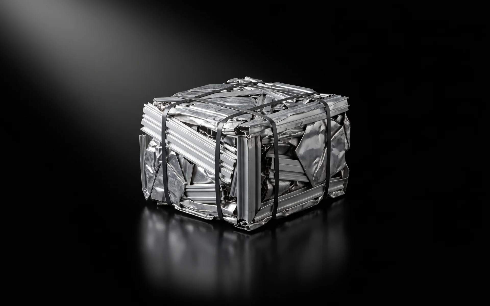

Aluminium
Five percent of the energy. All of the metal.
Recycling aluminium uses around 5% of the energy of making it from ore, and the metal comes back as good as new. The Metal Recycling Company recovers aluminium from fit-outs, appliances, frames and clearances across the group, sorts it by family and bales it for buyers.
Streams
What we take, and what it becomes
| Stream in | Typical source | Turned into |
|---|---|---|
| Extrusions | Window and door frames, shopfronts, partitions from fit-outs and demolition | Sorted extrusion, baled |
| Sheet and cladding | Roofing, cladding, signage, panels | Sorted sheet, baled |
| Castings | Engine and gearbox castings, appliance parts, wheels | Cast aluminium lots |
| Cans in bulk | Commercial venues, events, councils | Baled UBC (used beverage cans) |
| Mixed aluminium | Appliances, e-waste, mixed strip-outs | Hand sorted into families; steel and copper to their own lines |
Aluminium arrives with steel fixings, glass, rubber and plastic attached. We separate what we can and weigh out what is aluminium; the rest is reported as residual.

Why it is sorted
One family, one bale
Aluminium alloys do not all melt to the same thing. Extrusion, sheet and cast each go to different remelters and different products, and a mixed bale is worth less than the sum of its parts. So we sort by family before baling and sell each as its own lot.
Every lot carries the loads behind it — which partner, which site, what it weighed in, what came out. Buyers get a documented Australian source; partners get a recovery statement.
Have aluminium?
Fit-outs, store closures, manufacturing offcuts
Retail and commercial property groups produce aluminium in bursts — a refurbishment, a store closure, a partition strip-out. Manufacturers produce it steadily. Either way it is worth more sorted than skipped, and it comes back to you as a recovery statement with a carbon figure on it.
Buying or supplying aluminium?
Family, rough tonnage, how often, where. We will come back with what is available or what we can take.